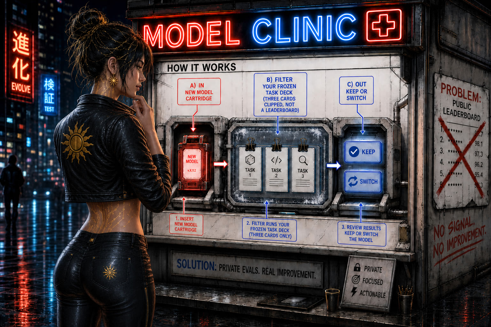

Plate header is ad-free · data-nosnippet

A two-point gap on separately sourced SWE-bench Verified scores can be the test setup. The useful half of a bench is the job it tested. Real work still decides which model you keep.
The decision
Do not pick a local coding model because one site says 70.6 and another says 68. Those two SWE-bench Verified figures are already on this site's coding guide as separately sourced scores, not one locked test. A two-point gap can be the test setup, not the model.
Nate B. Jones, 13 July 2026, episode Pick an AI Model That Fits How You Actually Work: a benchmark is evidence, not the way you pick a model.
The useful half: the shape of scores tells you which kind of real work a model is good at. A coding-bug test predicts repo work. A long-context test predicts reading a big project. Speed and VRAM predict whether it is usable on your machine. Real work still decides. The bench only tells you which job it was good at.
The two figures already on the coding guide
The coding guide already carries Devstral Small 2 at 68.0 percent on SWE-bench Verified from Mistral's own announcement, and Qwen3-Coder-Next at 70.6 percent on the same named bench under a SWE-Agent harness from that model's technical report. Both figures are already on the site. They come from two write-ups. They were never one locked test.
Zhang, Wang, Ge, Xu, Hamm, and Reddy (opened for this page) record a same-model Terminal-Bench 2 pass@1 move from 69.7 percent to 77.0 percent when only the harness changes. They cite independent monitoring of up to 15 percentage points of scaffold-only variation on SWE-bench Verified. They note that papers often treat a 2 to 4 point shift as a meaningful model advance. The 68.0 versus 70.6 pair sits inside that 2 to 4 point window. A two-point gap can be the test setup.
What the shape of a score is good for
Keep the number. Read the job next to it.
- A coding-bug test such as SWE-bench predicts repo work: localize an issue, edit files, pass the project's tests.
- A long-context test predicts reading a big project without losing the thread.
- Speed and VRAM predict whether the model is usable on your machine.
Real work still decides. The bench only tells you which job it was good at.
The same habit at Artificial Analysis
Artificial Analysis publishes more than one winner number. Their Intelligence Index is split across agents, coding, science, and general. They also publish speed, cost per task, and time per task. Their methodology notes that a given evaluation is more relevant for a given use.
This page copies no Artificial Analysis model scores and reprints no leaderboard. The habit is the split: name the job, then read the number that belongs to that job.
Artificial Analysis is mostly API and frontier models. This page applies the same habit to local models. Add VRAM, license, and the local harness you actually run.
What Goodhart named
Charles Goodhart's 1975 observation, restated by him later, is that any observed statistical regularity will tend to collapse once pressure is placed upon it for control purposes. The line lives in the 1984 collected essays reprint of the 1975 paper, which is the stable academic copy opened for this page. He called it a throw-away remark about monetary aggregates that had been chosen as targets because they had looked stable. Once they were targets, the regularity did not hold.
For a local coding pick, the translation is short. Once a percentage is the reason to ship, buy, or rank, expect the number to move for reasons besides "the weights got better at software engineering." The rest of this page is the five fields to write down, a worked example on SWE-bench, and a checklist next to the catalog.
Five fields to write down next to the number
Do this on paper, in a note, or in the checklist at the bottom. If a field is blank, the score is not ready to settle a close call.
1. Named harness
A coding-agent score is a joint product. The model proposes edits. The harness chooses context, tools, retries, tests, and when to stop. Jimenez, Yang, Wettig, Yao, Pei, Press, and Narasimhan already showed the joint product in the original SWE-bench paper: the same Claude 2 checkpoint resolves 1.96 percent of the 2,294 issues with a BM25 file retriever, 4.8 percent when the "oracle" files from the gold patch are provided, and 5.9 percent when those files are further collapsed to the edited lines plus a 15-line buffer. Those three numbers sit next to three settings in one paper.
In 2024, Xia, Deng, Dunn, and Zhang made the scaffold the object of study. Their Agentless system is a fixed three-phase pipeline (localization, repair, patch validation) with no autonomous tool loop. On SWE-bench Lite it reports 32.00 percent resolved, 96 correct fixes, at a stated cost of $0.70, the highest among the open-source agents they compared on that split. That score is a harness result and a model result together. If a vendor card says "32 percent SWE-bench" and does not say Lite, Agentless, and which base model, you cannot place it.
Write the harness the way you would write a compiler flag: SWE-agent, Agentless, OpenHands, a vendor CLI, BM25-plus-oracle, mini-SWE-agent, or "not stated." "Not stated" is a finding.
2. Training cutoff versus bench age
SWE-bench was built so the issue set can be extended with new GitHub work after a model's training date, with "minimal human intervention," specifically so later issues are less likely to sit in the pretraining mix. That design is in the paper we opened. It only helps you if the report tells you which issues were used and when the weights were frozen.
Ask two dates. When were the issues created or frozen? When was the checkpoint trained or released? If the issue dates sit inside the training window and the report is silent about leakage, you are reading a score that may include memory. If the issues are newer than the cutoff, the claim is harder even when the percentage is lower. A later, cleaner 25 percent can beat an earlier, dirtier 40 percent for a buying decision. The dates decide which sentence is true.
The original paper also checked a crude version of this worry. In the oracle-retrieval setting they split tasks before and after 2023 and reported little difference for most models (GPT-4 was the exception, and that GPT-4 run was on a 25 percent random subset for budget reasons). Treat that as a 2023 check. It does not clear 2026 weights on 2024 issue sets. "Cutoff versus bench age" is a field you fill in.
3. Contamination note
SWE-bench tried to resist the usual coding-bench leak. Instances are real issue–pull-request pairs from 12 popular Python repositories, filtered from about 90,000 pull requests down to 2,294 tasks that resolve an issue, contribute tests, and install. The gold patches edit 1.7 files, 3 functions, and 32.8 lines on average. Evaluation is execution: apply the patch, run the fail-to-pass tests plus a median of 51 additional tests. The construction uses real issues and execution. It still does not guarantee that every later subset is clean.
Agentless, on the Lite split of 300 instances, is the caution. The authors' manual pass found 4.3 percent of Lite issues contain the exact ground-truth patch in the issue text, 10.0 percent miss information needed to solve the issue, and 5.0 percent include a misleading solution. They built a filtered Lite-S set by removing those problems. If a 2026 card quotes Lite and does not say whether those items were dropped, a Lite number and a Lite-S number are different exams.
A usable contamination note is short. "Issues dated after cutoff." "Lite-S, exact-patch items removed." "Vendor fine-tune on SWE-bench-train." The original paper released 19,000 non-test issue–PR pairs from 37 repositories disjoint from the eval repos, which is a legitimate training set and also a reason to ask whether a later model was tuned on nearby data. "Not stated" is, again, a finding.
4. Vendor versus third-party
Who ran the loop, and who had a reason to pick the flattering one? A vendor announcement is a primary source for the claim "this lab reported X under some protocol." It is a weak source for the claim "this model beats that model." A third-party reproduction that names the harness and the split can still be the number you keep when the vendor figure is higher and silent.
This site already models that distinction on the coding page. Devstral Small 2's 68.0 percent is labeled as Mistral's published figure. Qwen3-Coder-Next's 70.6 percent is labeled as a technical-report figure under SWE-Agent. A Nebius write-up of OpenHands trajectories is cited there as a third-party Pass@1. Those are three different kinds of sentence. Collapsing them into a single ranked table is how a two-point spread becomes a purchase.
The catalog is equally blunt, and already on the site: benchmark figures on the cards are compiled from vendor announcements and public leaderboards at the time each card was written, are being re-cited to named sources, and should be treated as reported, not independently reproduced. If you are using this site as a buyer, that sentence is the rule.
5. This site's evidence labels
When a number appears on local-ai-models.ai, it should already carry one of three labels. Use the same labels when you paste a score into a runbook.
- Primary A named publisher you can open: a paper, a lab announcement, a third-party eval with a protocol. Example already on the site: Devstral Small 2 at 68.0 percent from Mistral.
- Practitioner-reported A figure that circulated in community or research-brief material without a resolvable publisher. Useful as a rumor with a date. Leave it out of a rank.
- Site assertion A number that appears on a catalog card without a citation. Example already on the site: GLM-4.7-Flash at 59.2 percent SWE-bench on the coding guide, flagged there as a site assertion rather than a cited result.
The labels are load ratings. A primary 25 percent with a named harness can outweigh a site-assertion 60 percent when you are choosing what to load into 24 GB. The about page is where this site says how the catalog is sourced and what it does not do. This page is the reading rule for the numbers that still leak onto cards.
Keep a frozen set of your own work
A public leaderboard is someone else's exam. Design a small eval around work you already do. Freeze it. A repo bug you have already fixed. A long project you actually read. A tool loop you already run. Write the same fields this page already uses: named harness, dates, and who ran it.
When a new model ships, run that same frozen set. That is how you decide whether to switch. Do not invent new SWE-bench numbers. Do not invent Artificial Analysis scores.
Artificial Analysis now has Optima, a custom benchmark you build from your own tasks.
SWE-bench as the worked example
Use SWE-bench when you want to see the whole practice in one bench family. It was built from real GitHub issues, and it still shows scaffold variance large enough to cover the 68.0 versus 70.6 window already on the coding guide.
What the 2023 paper actually built
The model is given a GitHub issue and a codebase snapshot and must emit a patch. Success is fail-to-pass tests plus the rest of the repo's checks. The authors collected from 12 widely used Python packages, kept only merged pull requests that resolve an issue and change tests, then kept only instances that install and show at least one fail-to-pass test. Forty percent of the final 2,294 instances have at least two fail-to-pass tests. Issue text averages 195 words. Codebases average 3,010 non-test files and 438,000 non-test lines. That is a working engineer's unit of work. A 2-point leaderboard delta on separately sourced cards is a thin reason to treat two weight files as different tools.
They also shipped SWE-bench Lite: 300 instances, sampled for self-contained functional bug fixes, covering 11 of the 12 original repositories. Lite is easier to run and easier to overfit in conversation. A Lite percentage and a full-set percentage are different exams. A later "Verified" or "Pro" percentage is a third exam. Write the split next to the number the way you write the quantization next to a VRAM figure.
Numbers from that paper, next to their setting
These are the figures printed in the copy of arXiv:2310.06770 opened for this page. They are historical. They are here because they show variance inside one paper, not because they describe 2026 open weights.
| Setting in the paper | Printed result |
|---|---|
| Issue set | 2,294 tasks from 12 Python repositories, filtered from about 90,000 pull requests |
| Claude 2 + BM25 retrieval | 1.96% resolved on the full set (best of the paper's main BM25 table) |
| Claude 2 + oracle files | 4.8% resolved |
| Claude 2 + oracle-collapsed (edited lines ±15) | 5.9% resolved |
| GPT-4, oracle-collapsed | 3.4% resolved (from 1.3% in the uncollapsed comparison they report) |
| SWE-Llama 7B and 13B + BM25 | 0.70% resolved each |
| SWE-bench Lite | 300 instances |
| SWE-bench-train | 19,000 issue–PR pairs from 37 repositories disjoint from eval |
Read that table as a practitioner. The best proprietary model in the paper clears fewer than two issues in a hundred under the realistic retriever. Give it the files the gold patch edited and the rate moves from 1.96 to 4.8. Shrink those files to the edited region and it rises to 5.9. If a 2023 retrieval choice can move Claude 2 from 1.96 to 5.9, a 2026 agent loop can move a modern model across the 68.0 to 70.6 window already on the coding guide.
What later papers added, without mixing splits
Agentless (arXiv:2407.01489, opened) is the 2024 reminder that a simpler scaffold can outscore an agent loop on the same Lite split, and that Lite itself is a messy exam. Use their 32.00 percent only with the words SWE-bench Lite and Agentless attached. Use their 4.3 / 10.0 / 5.0 percent issue-quality findings when someone treats every Lite solve as proof of repository skill.
Zhang et al. (arXiv:2605.23950, opened) is the 2026 reminder that the field still publishes a single number per model–benchmark pair and then attributes it to the model. Their proposed fix is disclosure: locked-harness comparisons, or a factorial grid that reports harness variance and model variance separately. Until a write-up does one of those, they say leaderboard comparisons for long-horizon agents should be treated as incomplete. That is the same reading this page uses for a local buyer.
Do not subtract 1.96 from 32.00 and call it two years of progress. Different split, different harness, different models. The comparable move is same split, named harness, dated cutoff.
How to use this on the catalog you already have
This page does not add new model scores. It tells you how to hold the ones that are already here.
- On the catalog, treat a SWE-bench badge as a reported figure. The page already says the cards compile vendor and leaderboard numbers and are not independent runs. If two cards differ by a few points, ignore the rank and compare license, VRAM, and context instead.
- On the coding guide, prefer the three named primary citations (Mistral 68.0, Qwen3-Coder-Next 70.6 under SWE-Agent, Nebius 66.5 Pass@1 on a 480B) over any unlabeled percentage. Those three still do not share one harness.
- On community analytics, treat downloads, likes, and discussion as attention. Attention is a useful tie-break after you know the job and the VRAM fit.
- If you need to correct a card, the path is the about page plus the changelog.
A practical buying translation for a 24 GB box: pick the size class first (8B, 14B–24B, 30B–32B), then pick the license and the VRAM fit, then pick the runner. Use a leaderboard to see which job a model was tested on. Do not spend the last 2 GB of headroom on a 2-point badge.
Reading checklist
HTML on the page. Check a box only when the report in front of you actually states the field. Dated with the page: 20 August 2026.
Before this score can settle a close call
Nine boxes. A score with fewer than six checked is a headline. This card does not store anything; it is a reading aid on the page.
Frequently asked questions
Why not pick on 68 versus 70.6?
Those two SWE-bench Verified figures are already on the coding guide as separately sourced scores. Mistral published 68.0 for Devstral Small 2. The Qwen3-Coder-Next technical report published 70.6 under SWE-Agent. A two-point gap can be the test setup. Zhang et al. record a same-model Terminal-Bench 2 pass@1 move from 69.7 percent to 77.0 percent when only the harness changes.
What is a score good for, then?
The shape of scores tells you which kind of real work a model is good at. A coding-bug test predicts repo work. A long-context test predicts reading a big project. Speed and VRAM predict whether it is usable on your machine. Real work still decides. The bench only tells you which job it was good at.
Why is SWE-bench the example instead of HumanEval?
Because it was built from real issues, and because the original paper already prints a three-way harness-style spread on one model. HumanEval still has a place as a smoke test. The unit of work is small, so scaffold effects are harder to see.
Did this site run SWE-bench?
No. The coding guide already says so. Every percentage mentioned here is either printed in a paper we opened, already labeled on this site, or used as an unlabeled band (the 25 and 40 percent cutoff examples). If a source is wrong, the sentence that restates it is wrong.
What should I do when two local models sit two points apart?
Stop using the leaderboard as the picker. Compare VRAM at Q4_K_M, license, context you can actually hold, and whether your runner has a decent tool loop. Then look at community traction as a last tie-break for "will this still be packaged next quarter."
Does this apply to MMLU and chat benches too?
Any exam that labs train toward will drift. The harness half is sharper on agent benches, where the loop is a large part of the score. For static multiple-choice, write cutoff, contamination, and vendor-versus-third-party. You can often skip "named SWE-agent." Do not skip the evidence label.
Sources
- C. A. E. Goodhart, "Problems of Monetary Management: The UK Experience," originally 1975, reprinted as chapter 4 of Monetary Theory and Practice: The U.K. Experience (Palgrave, 1984), pp. 91–121. Opened 2026-08-20 at doi.org/10.1007/978-1-349-17295-5_4. The opened Springer page prints the chapter abstract and bibliographic reprint, not a page-numbered interior quotation.
- Charles Goodhart, "Goodhart's Law," Le Libellio d'AEGIS 9(4), 2013, pp. 29–33. Opened 2026-08-20 at lelibellio.com (PDF). Short attributed line used above: "any observed statistical regularity will tend to collapse once pressure is placed upon it for control purposes." Goodhart writes there that the best source for that wording is Goodhart (1984), and that Marilyn Strathern (1997) restated the idea as "When a measure becomes a target, it ceases to be a good measure."
- Carlos E. Jimenez, John Yang, Alexander Wettig, Shunyu Yao, Kexin Pei, Ofir Press, Karthik Narasimhan, "SWE-bench: Can Language Models Resolve Real-World GitHub Issues?," arXiv:2310.06770. Abstract and PDF opened 2026-08-20: arxiv.org/abs/2310.06770, arxiv.org/pdf/2310.06770. Numbers used above appear in that copy next to the settings named in the table.
- Chunqiu Steven Xia, Yinlin Deng, Soren Dunn, Lingming Zhang, "Agentless: Demystifying LLM-based Software Engineering Agents," arXiv:2407.01489. Abstract opened 2026-08-20: arxiv.org/abs/2407.01489. Figures used: 32.00% (96 fixes) on SWE-bench Lite; $0.70 stated cost; 4.3% / 10.0% / 5.0% Lite issue-quality rates; three-phase localization, repair, validation.
- Yunbei Zhang, Janet Wang, Yingqiang Ge, Weijie Xu, Jihun Hamm, Chandan K. Reddy, "Stop Comparing LLM Agents Without Disclosing the Harness," arXiv:2605.23950. HTML opened 2026-08-20: arxiv.org/abs/2605.23950, arxiv.org/html/2605.23950v1. Figures used: Terminal-Bench 2 pass@1 69.7% to 77.0% with harness change; up to 15 percentage points scaffold-only variation on SWE-bench Verified; 2 to 4 points as a typical reported model advance; SWE-bench Pro Claude Opus 4.5 at 45.9% (SEAL) versus 55.4% (Claude Code).
- Already on this site, 2026-08-20: best-local-coding-llm.html (Devstral Small 2 68.0% primary / Mistral; Qwen3-Coder-Next 70.6% under SWE-Agent; GLM-4.7-Flash 59.2% labeled site assertion; statement that this site did not run SWE-bench). local-ai-models.html catalog note that card benchmarks are compiled from vendor announcements and public leaderboards and are not independently reproduced.
- Nate B. Jones, episode Pick an AI Model That Fits How You Actually Work, 13 July 2026. Cited by title and date only. No podcast, YouTube, or transcript quotation.
- Artificial Analysis, language-model methodology and index. Opened for the published habit (Intelligence Index split across agents, coding, science, and general; plus speed, cost per task, and time per task). artificialanalysis.ai, artificialanalysis.ai/methodology. No Artificial Analysis model scores copied onto this page.